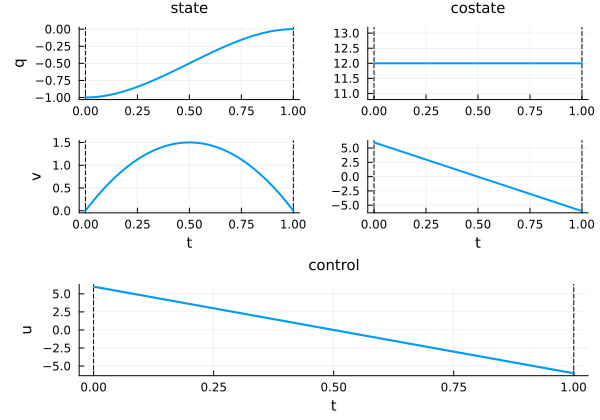
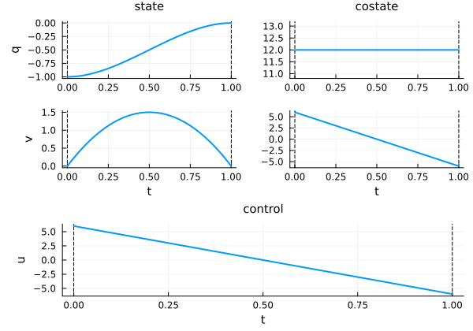

Double integrator: energy minimisation
Let us consider a wagon moving along a rail, whose acceleration can be controlled by a force $u$. We denote by $x = (q, v)$ the state of the wagon, where $q$ is the position and $v$ the velocity.

We assume that the mass is constant and equal to one, and that there is no friction. The dynamics are given by
\[ \dot q(t) = v(t), \quad \dot v(t) = u(t),\quad u(t) \in \R,\]
which is simply the double integrator system. Let us consider a transfer starting at time $t_0 = 0$ and ending at time $t_f = 1$, for which we want to minimise the transfer energy
\[ \frac{1}{2}\int_{0}^{1} u^2(t) \, \mathrm{d}t\]
starting from $x(0) = (-1, 0)$ and aiming to reach the target $x(1) = (0, 0)$.
First, we need to import the OptimalControl.jl package to define the optimal control problem, NLPModelsIpopt.jl to solve it, and Plots.jl to visualise the solution.
using OptimalControl
using NLPModelsIpopt
using PlotsOptimal control problem
Let us define the problem with the @def macro:
t0 = 0; tf = 1; x0 = [-1, 0]; xf = [0, 0]
ocp = @def begin
t ∈ [t0, tf], time
x = (q, v) ∈ R², state
u ∈ R, control
x(t0) == x0
x(tf) == xf
ẋ(t) == [v(t), u(t)]
0.5∫( u(t)^2 ) → min
endMathematical formulation
\[ \begin{aligned} & \text{Minimise} && \frac{1}{2}\int_0^1 u^2(t) \,\mathrm{d}t \\ & \text{subject to} \\ & && \dot{x}(t) = [v(t), u(t)], \\[1.0em] & && x(0) = (-1,0), \\[0.5em] & && x(1) = (0,0). \end{aligned}\]
For a comprehensive introduction to the syntax used above to define the optimal control problem, see this abstract syntax tutorial. In particular, non-Unicode alternatives are available for derivatives, integrals, etc.
Solve and plot
Direct method
We can solve it simply with:
direct_sol = solve(ocp)▫ This is OptimalControl 2.0.2, solving with: collocation → adnlp → ipopt (cpu)
📦 Configuration:
├─ Discretizer: collocation
├─ Modeler: adnlp
└─ Solver: ipopt
▫ This is Ipopt version 3.14.19, running with linear solver MUMPS 5.8.2.
Number of nonzeros in equality constraint Jacobian...: 1754
Number of nonzeros in inequality constraint Jacobian.: 0
Number of nonzeros in Lagrangian Hessian.............: 250
Total number of variables............................: 752
variables with only lower bounds: 0
variables with lower and upper bounds: 0
variables with only upper bounds: 0
Total number of equality constraints.................: 504
Total number of inequality constraints...............: 0
inequality constraints with only lower bounds: 0
inequality constraints with lower and upper bounds: 0
inequality constraints with only upper bounds: 0
iter objective inf_pr inf_du lg(mu) ||d|| lg(rg) alpha_du alpha_pr ls
0 5.0000000e-03 1.10e+00 2.24e-14 0.0 0.00e+00 - 0.00e+00 0.00e+00 0
1 6.0000960e+00 2.22e-16 1.78e-15 -11.0 6.08e+00 - 1.00e+00 1.00e+00h 1
Number of Iterations....: 1
(scaled) (unscaled)
Objective...............: 6.0000960015360381e+00 6.0000960015360381e+00
Dual infeasibility......: 1.7763568394002505e-15 1.7763568394002505e-15
Constraint violation....: 2.2204460492503131e-16 2.2204460492503131e-16
Variable bound violation: 0.0000000000000000e+00 0.0000000000000000e+00
Complementarity.........: 0.0000000000000000e+00 0.0000000000000000e+00
Overall NLP error.......: 1.7763568394002505e-15 1.7763568394002505e-15
Number of objective function evaluations = 2
Number of objective gradient evaluations = 2
Number of equality constraint evaluations = 2
Number of inequality constraint evaluations = 0
Number of equality constraint Jacobian evaluations = 2
Number of inequality constraint Jacobian evaluations = 0
Number of Lagrangian Hessian evaluations = 1
Total seconds in IPOPT = 3.565
EXIT: Optimal Solution Found.And plot the solution with:
plot(direct_sol)
The solve function has options, see the solve tutorial. You can customise the plot, see the plot tutorial.
Indirect method
The first solution was obtained using the so-called direct method.[1] Another approach is to use an indirect simple shooting method. We begin by importing the necessary packages.
using OrdinaryDiffEq # Ordinary Differential Equations (ODE) solver
using NonlinearSolve # Nonlinear Equations (NLE) solverTo define the shooting function, we must provide the maximising control in feedback form:
# maximising control, H(x, p, u) = p₁v + p₂u - u²/2
u(x, p) = p[2]
# Hamiltonian flow
f = Flow(ocp, u)
# state projection, p being the costate
π((x, p)) = x
# shooting function
S(p0) = π( f(t0, x0, p0, tf) ) - xfWe are now ready to solve the shooting equations.
# auxiliary in-place NLE function
nle!(s, p0, _) = s[:] = S(p0)
# initial guess for the Newton solver from the direct solution
t = time_grid(direct_sol) # the time grid as a vector
p = costate(direct_sol) # the costate as a function of time
p0_guess = p(t0) # initial costate
# NLE problem with initial guess
prob = NonlinearProblem(nle!, p0_guess)
# resolution of S(p0) = 0
shooting_sol = solve(prob; show_trace=Val(true))
p0_sol = shooting_sol.u # costate solution
# print the costate solution and the shooting function evaluation
println("\ncostate: p0 = ", p0_sol)
println("shoot: S(p0) = ", S(p0_sol), "\n")
Algorithm: NewtonRaphson(
descent = NewtonDescent(),
autodiff = AutoForwardDiff(),
vjp_autodiff = AutoReverseDiff(
compile = false
),
jvp_autodiff = AutoForwardDiff(),
concrete_jac = Val{false}()
)
---- ------------- -----------
Iter f(u) inf-norm Step 2-norm
---- ------------- -----------
0 2.40003840e-02 0.00000000e+00
1 1.15085180e-14 2.39051536e-02
Final 1.15085180e-14
----------------------
costate: p0 = [12.000000000000133, 6.000000000000043]
shoot: S(p0) = [3.853755692201154e-16, -1.1508517954971638e-14]To plot the solution obtained by the indirect method, we need to build the solution of the optimal control problem. This is done using the costate solution and the flow function.
indirect_sol = f((t0, tf), x0, p0_sol; saveat=range(t0, tf, 100))
plot(indirect_sol)
- You can use MINPACK.jl instead of NonlinearSolve.jl.
- For more details about the flow construction, visit the Compute flows from optimal control problems page.
- In this simple example, we have set an arbitrary initial guess. It can be helpful to use the solution of the direct method to initialise the shooting method. See the Goddard tutorial for such a concrete application.
- For a version with a state constraint on the velocity, see the State constraint example.
- 1J. T. Betts. Practical methods for optimal control using nonlinear programming. Society for Industrial and Applied Mathematics (SIAM), Philadelphia, PA, 2001.